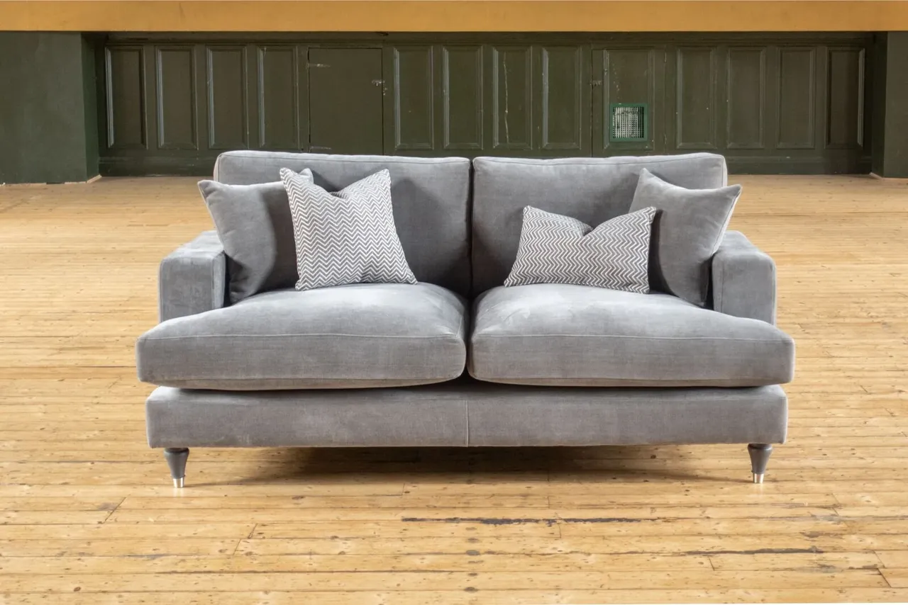
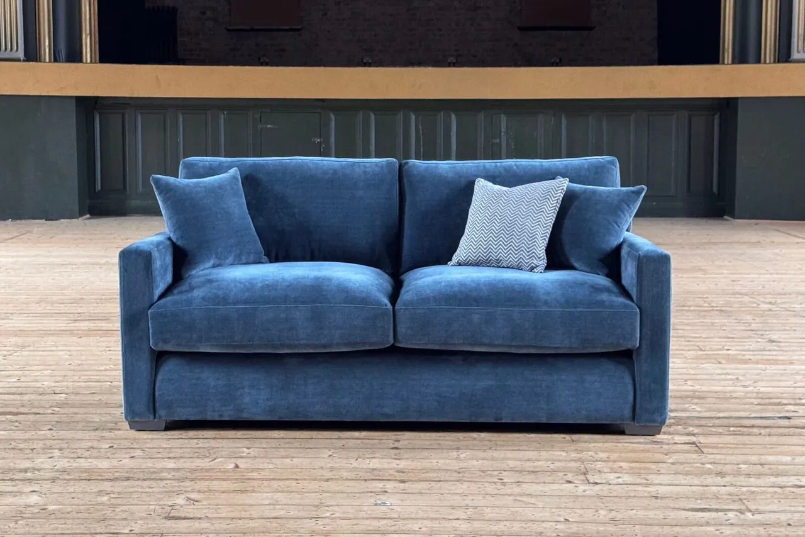
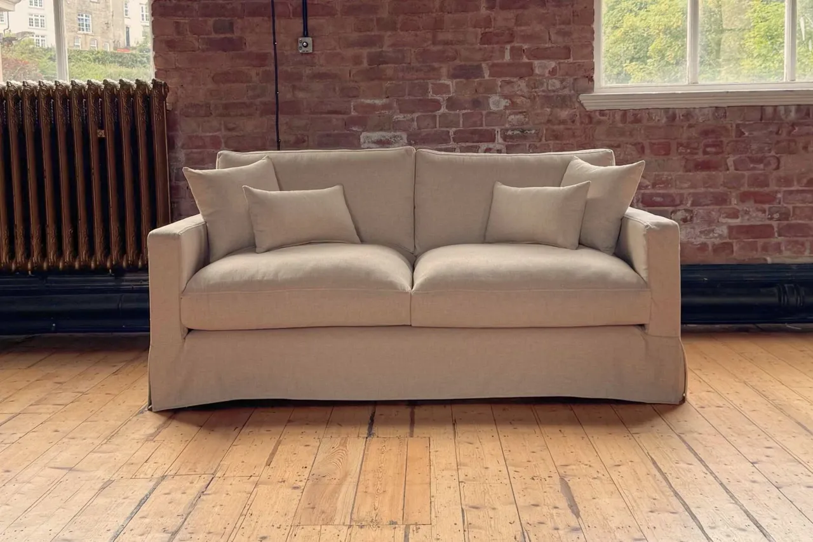

Tailored outline
Marlow
Turned legs and a tailored profile. The three-seater is 185cm wide, with a 149cm seat width.
Explore Marlow ↗Look at proportions, covers and upholstery side by side. The name of a size is only a starting point: each design has its own measurements.

Turned legs and a tailored profile. The three-seater is 185cm wide, with a 149cm seat width.
Explore Marlow ↗
Clean square arms and fixed upholstery. At the same 185cm overall width, its three-seater has a 161cm seat width.
Explore Calder ↗
Slim arms and a removable, washable Cambridge cover. Follow the care label supplied with the furniture.
Explore Alder ↗
Sculpted arms and a wider three-seater profile: 205cm overall width, with a 76cm seat depth and 43cm seat height.
Explore Rowan ↗Photographs show example upholstery and configurations. The product photographs do not change with the fabric swatch you select.
All four designs also come as an armchair, love seat, two-seater and four-seater. The comparison below uses the three-seater in each range. For every size, follow the individual dimension guides.
| Specification | Marlow | Calder | Alder | Rowan |
|---|---|---|---|---|
| Lovely Velvet | £1,695 | £1,695 | Not offered | £1,695 |
| Manolo | £1,745 | £1,745 | Not offered | £1,745 |
| Cambridge Linen | £1,845 | £1,845 | £2,045 | £1,845 |
| Overall width × depth × height | 185 × 100 × 90cm | 185 × 100 × 90cm | 185 × 100 × 90cm | 205 × 98 × 95cm |
| Seat width | 149cm | 161cm | 161cm | 165cm |
| Seat depth | 70cm | 70cm | 70cm | 76cm |
| Seat height | 45cm | 45cm | 45cm | 43cm |
| Cover | Fixed | Fixed | Removable and washable; follow the supplied care label | Fixed |
| Seat cushions | Multi-layered foam and fibre | Foam and fibre | Foam-wrapped | Multi-layered foam and fibre |
| Back cushions | Fibre-filled | Fibre-filled | Fibre-filled | Fibre-filled |
| Upholstery collections | Lovely Velvet · Manolo · Cambridge Linen | Lovely Velvet · Manolo · Cambridge Linen | Cambridge Linen | Lovely Velvet · Manolo · Cambridge Linen |
| All five sizes | Marlow dimension guide ↗ | Calder dimension guide ↗ | Alder dimension guide ↗ | Rowan dimension guide ↗ |
Prices are for the named three-seater and upholstery collection; colour choices within a collection share the same price. Delivery is included to serviceable Great Britain mainland addresses. Islands and some AB, IV and PA locations need a separate quote. Check delivery coverage.
Measurements are in centimetres and are manufacturer-published guides for handmade furniture. Confirm the final specification and delivery access before ordering. All designs use a solid hardwood frame and sprung base, handmade in Lancashire.
Overall dimensions tell you how much room a sofa occupies. Seat width shows the space between the arms; seat depth and seat height help you compare it with a sofa you already know. Cushion construction alone does not establish a firmness rating.
Alder has a removable, washable cover in Cambridge Linen. Marlow, Calder and Rowan have fixed covers. Follow the supplied fabric care guidance; fixed covers should not be treated as removable or machine washable.
Manolo and Cambridge Linen are not offered for commercial use. We check the complete upholstery specification and intended setting for every commercial project. Explore Hollin & Vale Trade.
Use our choosing guide to measure the space and delivery route. If you are comparing two designs, share the size, fabric and room measurements with us.
For physical fabric swatches, tell us the collection and colours you are considering. We will confirm availability and any sample, postage or timing details before proceeding.